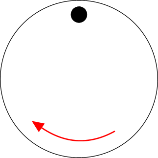
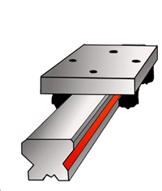
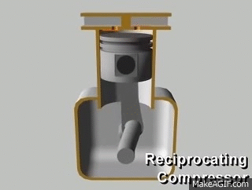
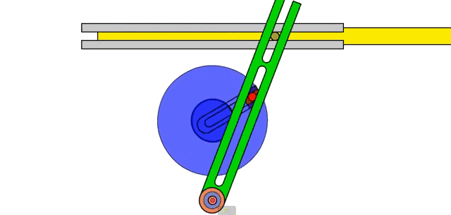
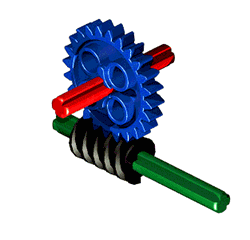
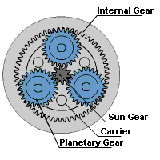
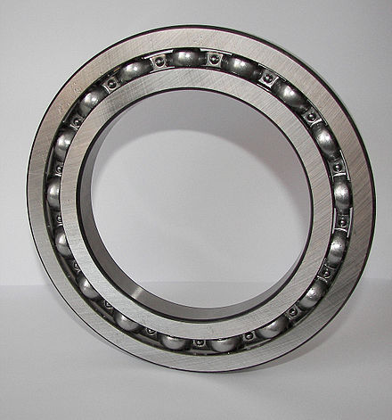
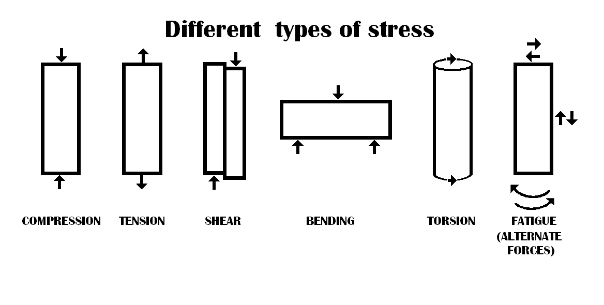
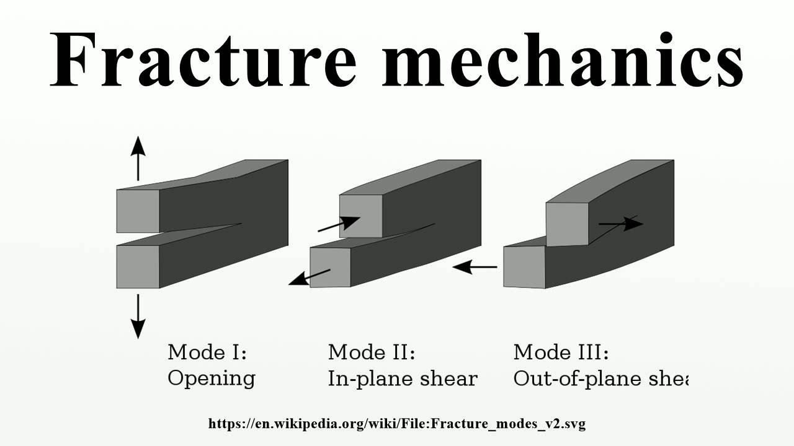

Technical Understanding 1
Table of Contents
1 Considerations made about the structural integrity of a design solution
6.1a You should understand how and why some materials and/or system components need to be reinforced or stiffened to withstand forces and stresses to fulfil the structural integrity of products.
6.1b Show an understanding of the processes that can be used to ensure the structural integrity of a product, such as:
i Triangulation
A triangle is one of the strongest shapes available for engineers to use. It is used to create a shape that is rigid and will not move. We find these shapes regularly used in the building industry to keep building upright and rigid.
Click on this link for more information on triangulation.
ii Reinforcing
Reinforcing is used to strengthen materials and improve either their compressive or tensile strength.
2 How mechanisms provide functionality to products and systems
6.2a Demonstrate an understanding of the functions that mechanical devices offer to products, providing different types of motion, including:
i. rotary

ii. linear

iii. reciprocating

iv. oscillating.

6.2b Demonstrate an understanding of devices and systems that are used to change the magnitude and direction of forces and torques, including:
i. Gears, cams, pulleys and belts, levers, linkages, screw threads, worm drives,
chain drives and belt drives.
Click on this link to see images and explanations of gears, cams, pulleys, levers, chain drives and belt drives.
Screw threads and worm drives are often used to control linear motion in CNC machines, such as 3D printers.

ii. Epicyclic gear systems.
An epicyclic gear train consists of two gears mounted so that the center of one gear revolves around the center of the other. A carrier connects the centers of the two gears and rotates to carry one gear, called the planet gear, around the other, called the sun gear. The planet and sun gears mesh so that their pitch circles roll without slip. A point on the pitch circle of the planet gear traces an epicycloid curve. In this simplified case, the sun gear is fixed and the planetary gear(s) roll around the sun gear.

iii. Bearings and lubrication.
A bearing is a machine element that constrains relative motion to only the desired motion, and reduces friction between moving parts. The design of the bearing may, for example, provide for free linear movement of the moving part or for free rotation around a fixed axis; or, it may prevent a motion by controlling the vectors of normal forces that bear on the moving parts. Most bearings facilitate the desired motion by minimizing friction. Bearings are classified broadly according to the type of operation, the motions allowed, or to the directions of the loads (forces) applied to the parts.

A lubricant is a substance, usually organic, introduced to reduce friction between surfaces in mutual contact, which ultimately reduces the heat generated when the surfaces move. It may also have the function of transmitting forces, transporting foreign particles, or heating or cooling the surfaces. The property of reducing friction is known as lubricity.
Types of lubricants:
Mineral Oil
Synthetic oils
Solid Lubricants
Aqueous Lubricants
Bio Lubricants
iv. Efficiency in mechanical systems.
Mechanical efficiency measures the effectiveness of a machine in transforming the energy and power that is input to the device into an output force and movement. Efficiency is measured as a ratio of the measured performance to the performance of an ideal machine:
Efficiency = Measured performance/Ideal performance
or
Efficiency = (Mechanical Advantage X 100)/Velocity Ratio
Because the power transmission system or mechanism does not generate power, its ideal performance occurs when the output power equals the input power, that is, when there are no losses. Real devices dissipate power through friction, part deformation and wear.
The ideal transmission or mechanism has an efficiency of 100%, because there is no power loss. Real devices will have efficiency less than 100% because rigid and friction-less systems do not exist. The power losses in a transmission or mechanism are eventually dissipated as heat.
3 The forces that need consideration to ensure structural and mechanical efficiency
6.3a Demonstrate an understanding of static and dynamic forces in structures and how to achieve rigidity, including:
i. Tension, compression, torsion and bending.

Tension may describe the pulling force transmitted axially by means of a string, cable, chain, or similar one-dimensional continuous object, or by each end of a rod, truss member, or similar three-dimensional object; tension might also be described as the action-reaction pair of forces acting at each end of said elements. Tension could be the opposite of compression.
Compression is the application of balanced inward ("pushing") forces to different points on a material or structure, that is, forces with no net sum or torque directed so as to reduce its size in one or more directions.
Torsion is the twisting of an object due to an applied torque. Torsion is expressed in newton per squared meter (Pa) or pound per squared inch (psi) while torque is expressed in newton metres (N·m) or foot-pound force (ft·lbf).
Bending (also known as flexure) characterizes the behavior of a slender structural element subjected to an external load applied perpendicularly to a longitudinal axis of the element.
ii. Stress, strain and elasticity.
Stress is a physical quantity that expresses the internal forces that neighboring particles of a continuous material exert on each other.

Strain is the measure of the deformation of the material. For example, when a solid vertical bar is supporting a weight, each particle in the bar pushes on the particles immediately below it. When a liquid is in a closed container under pressure, each particle gets pushed against by all the surrounding particles.
Elasticity is the ability of a body to resist a distorting influence or deforming force and to return to its original size and shape when that influence or force is removed.
iii. Mass and weight.
Mass is both a property of a physical body and a measure of its resistance to acceleration (a change in its state of motion) when a net force is applied.It also determines the strength of its mutual gravitational attraction to other bodies. The basic SI unit of mass is the kilogram (kg).
Weight of an object is usually taken to be the force on the object due to gravity.Weight is a vector whose magnitude (a scalar quantity), often denoted by an italic letter W, is the product of the mass m of the object and the magnitude of the local gravitational acceleration g;thus: W = mg. The unit of measurement for weight is that of force, which in the International System of Units (SI) is the newton.
iv. Rigidity.
Rigidity is the property of a solid body to resist deformation. Structural rigidity, a mathematical theory of the stiffness of ensembles of rigid objects connected by hinges.
v. Modes of failure.
Mechanical failure. Some types of mechanical failure mechanisms are: excessive deflection, buckling, ductile fracture, brittle fracture, impact, creep, relaxation, thermal shock, wear, corrosion, stress corrosion cracking, and various types of fatigue.
